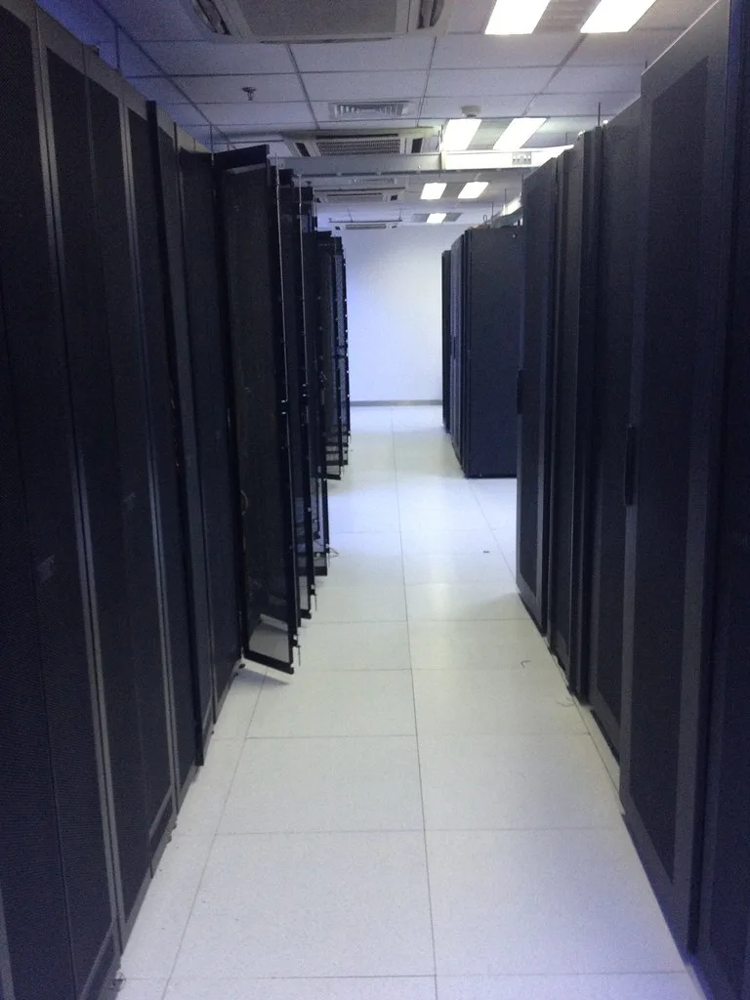

삼성전자 "메모리 공급 부족 2028년까지"…하이퍼스케일러 5곳과 장기계약
삼성전자가 인공지능(AI) 서버 수요 폭증에 따른 메모리 반도체 공급 부족이 2028년까지 이어질 것이라는 전망을 내놨다. 지난 2분기 실적발표 컨퍼런스콜에서 회사 측은 올해 발생한 공급 부족으로 인한 미충족 수요가 내년으로 그대로 이연되면서, 2027년에는 부족 현상이 올해보다 더 심화되고 2028년까지도 해소되지 않을 것이라고 밝혔다. 이는 삼성전자가 2분기 매출과 영업이익에서 나란히 역대 최대 실적을 갈아치운 직후 나온 전망이어서 더욱 무게가 실린다.
공급 부족이 장기화하는 배경에는 반도체 산업 특유의 긴 투자 주기가 있다. 신규 팹을 짓기 시작해 실제 웨이퍼를 양산하기까지 걸리는 기간이 3년 반을 넘기 때문에, 지금 당장 증설을 결정해도 수요를 단기간에 따라잡기 어렵다는 것이다. 여기에 빅테크 기업들의 대규모 AI 인프라 투자가 2029년 이후에도 이어질 것으로 예상되면서, 메모리 수요 증가세는 당분간 꺾이지 않을 전망이다.

이에 따라 삼성전자는 장기공급계약(LTA)을 통한 안정적 물량 확보에 속도를 내고 있다. 회사는 글로벌 상위권 데이터센터 고객사 다섯 곳과 최소 5년 규모의 장기공급계약을 이미 체결했으며, 추가로 다섯 곳과도 협상을 진행 중이라고 설명했다. 업계에서는 이번에 계약을 맺은 고객사에 아마존웹서비스(AWS), 마이크로소프트(MS) 등 주요 하이퍼스케일러가 포함된 것으로 보고 있으며, 협상 중인 나머지 다섯 곳 역시 비슷한 체급의 글로벌 클라우드·AI 인프라 기업들일 것으로 관측된다.
삼성전자는 중장기적으로 전체 생산능력(캐파)의 60~70% 수준을 장기계약 물량으로 운영한다는 목표를 제시했다. 특정 고객에게 공급을 몰아주기보다 여러 하이퍼스케일러와 다년 계약을 분산 체결해, 가격 변동성과 물량 리스크를 함께 줄이겠다는 전략으로 풀이된다.
같은 컨퍼런스콜에서는 고대역폭메모리(HBM) 사업의 반등 신호도 함께 제시됐다. 회사는 3분기 HBM4 매출이 전분기 대비 3배 이상 확대될 것으로 내다봤으며, 하반기에는 HBM4가 전체 HBM 매출의 60%를 넉넉히 웃돌 것으로 기대했다. 고객사별 성능 평가가 순조롭게 마무리되면서 하반기 증산 속도에 맞춰 수요가 빠르게 늘고 있다는 설명이다. 파운드리 사업 역시 4나노 공정 기반 제품 양산 본격화와 미·중 주요 거래선 판매 확대에 힘입어 전년 대비 두 자릿수 매출 성장을 자신했다.

이 같은 공급망 재편의 여파는 관련 부품업계로도 번지고 있다. 계열사인 삼성전기 역시 별도로 톱티어 하이퍼스케일러와 주요 반도체 업체 등 10여 곳의 고객사와 적층세라믹콘덴서(MLCC) 장기공급계약을 체결했다고 밝혔다. AI 서버용 부품 수요가 메모리를 넘어 주변 부품 시장 전반으로 확산되고 있음을 보여주는 대목이다.
시장에서는 이번 전망이 메모리 가격 강세 국면이 상당 기간 이어질 수 있다는 신호로 받아들여지고 있다. 반도체 업종 전반이 이런 기대감에 힘입어 견조한 투자심리를 이어가는 모습이다. 다만 공급 부족이 장기화될수록 이를 활용하는 서버·가전 등 전방 산업 고객사들의 원가 부담도 함께 커질 수 있어, 반도체 업계 전반의 수급 균형을 둘러싼 논의는 당분간 계속될 것으로 보인다.